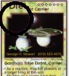
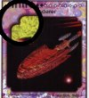
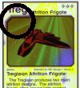

Rules
The rule book, version 2.0, is available as a Microsoft Word document. Click here to downlaod.
New Rules
While waiting for the new player's handbook to revise the current rulebook, I thought it might be nice to share with any players not
privvy to Galactic Fire magazine several new rules points that will crop up with the new promotional cards in the Indirigan run.
Of all of these items are quoted from Galactic Fire #3 and are therefore Copyright © 1996 Companion Games.
|

Prototype Class Cards: Prototype class cards are limited to 1 of each exactly identical card in a deck. Note: this restriction of
1 per deck also prevents a Prototype class card from being placed in the reserve fleet at the start of a game. When stocking a
Prototype class card in a deck, the card will consume 1/2 of a technology slot. Unused exception slots may be used as technology
slots.
|
|

Conjectural Class Cards: Conjectural class cards are limited to 1 of each exactly identical card in a deck. Note: this restriction of
1 per deck also prevents a Conjectural class card from being placed in the reserve fleet at the start of a game. When stocking a
Conjectural class card in a deck, the card will consume 1/2 of a technology slot. Unused exception slots may be used as technology
slots. (Note: the sample Conjectural class border shown here is also a Persona class card.)
|
|

Attrition Class Cards: During the Draw Cards Phase, as a card play, the top most Attrition class card in the Discard Pile may be
moved to the hand. The number of card plays that may be used in this manner during a Draw Cards Phase may not exceed the number
of card draws allowed during the phase. Each turn, 1 Attrition class card may be played without consuming a card play.
|
|
Technology Slots: Each deck will be allowed 1 technology slot for every 25 cards in the deck. This means that a 150-174 card
deck would be allowed 6 technology slots. Unused exception slots may also be converted into technology slots. For deck stocking
purposes, Prototype class cards consume 1/2 of a technology slot and Conjectural class cards consume 1 technology
slot.
|
|
Exceptions: Rather than allowing 3 exceptions in a deck, as of January 1st, 1997, a deck is allowed 1/2 of an exception for
every 25 cards in the deck. This means that a 150-174 card deck would be allowed the former 3 exceptions. Smaller decks would be
allowed fewer exceptions and large decks would be allowed more.
|
Rules Variants
There are two variants rules systems available at this time:
This page is maintained by skeeve@inreach.com
Image scanning by Chris Muoio. Thanks Chris!